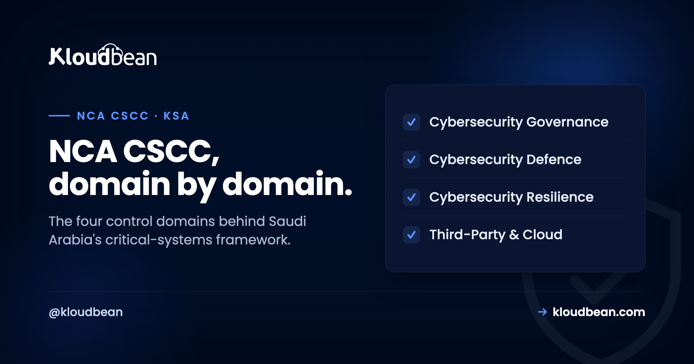

NCA CSCC Explained: Critical Systems Cybersecurity Controls in Saudi Arabia

If someone has told you a system you run is a "critical system" under Saudi rules, they mean CSCC-1:2019, the National Cybersecurity Authority's Critical Systems Cybersecurity Controls. It sits on top of the Essential Cybersecurity Controls, adds stricter requirements, and it changes real technical decisions: where the system is hosted, who can reach it from where, how long logs are kept, and how often you test a restore. This guide explains what the framework actually asks for, and which parts hosting can and cannot answer.
CSCC-1:2019 is the National Cybersecurity Authority's set of minimum cybersecurity requirements for critical systems in Saudi Arabia. It extends the Essential Cybersecurity Controls (ECC-1:2018), and ECC compliance is a prerequisite, so CSCC is additional to ECC rather than a replacement. It contains 4 main domains, 21 subdomains, 32 main controls, and 73 subcontrols. It applies to organisations that own or operate systems they have identified as critical.
CSCC and ECC: an extension, not a replacement
Start with the relationship, because it decides your workload. NCA published ECC-1:2018 to set a baseline for all organisations. CSCC-1:2019 was then developed for national critical systems, and the framework is explicit that continuous ECC compliance is required in order to be fully compliant with CSCC. So the reading order is ECC first, then CSCC on top. Most CSCC controls are phrased as additions: "in addition to the controls in ECC subdomain X, the following must also be met."
Practically, that means a CSCC conversation is never only about the critical system. Your wider ECC posture has to hold too. If you're new to both, our NCA ECC hosting guide covers the baseline layer first.
Is your system actually "critical"?
This is the question worth answering carefully, because it determines whether any of this applies. NCA defines a critical system as any system or network whose failure, unauthorised change, or unauthorised access, including to the data it stores or processes, may negatively affect the organisation's business and service availability, or cause negative economic, financial, security, or social impact at the national level.
The framework then gives criteria organisations may use to identify their own critical systems:
- Negative impact on national security.
- Negative impact on the Kingdom's reputation and public image.
- Significant financial losses, given as more than 0.01% of GDP.
- Negative impact on services provided to a large number of users, given as more than 5% of the population.
- Loss of lives.
- Unauthorised disclosure of data classified Top Secret or Secret.
- Negative impact on the operations of one or more vital sectors.
Note that identification is the organisation's own responsibility, and it is the first implementation step NCA sets out. A hosting provider cannot decide this for you. Note also how broad the component list is once a system is in scope: network devices, firewalls, IDS and IPS, APT protection, databases, storage, middleware, servers and operating systems, applications, encryption devices, and even peripherals like printers, plus the people in supporting roles and the related documentation.
Who it applies to
The scope covers systems deemed critical by the organisations that own or operate them, whether those are government organisations inside the Kingdom or abroad, including ministries, authorities, establishments, and embassies, along with subsidiaries of government or private organisations. Applicability is assessed per control. The cloud and hosting subdomain (4-2), for instance, applies to organisations currently using or planning to use cloud computing and hosting services.
The four domains
| Domain | What it covers |
|---|---|
| 1. Cybersecurity Governance | Strategy, risk management, cybersecurity in IT project management, periodical review and audit, human resources |
| 2. Cybersecurity Defence | Asset and identity management, system and network protection, mobile devices, data protection, cryptography, backup, vulnerabilities, penetration testing, event logs and monitoring, web and application security |
| 3. Cybersecurity Resilience | Cybersecurity aspects of business continuity management |
| 4. Third-Party and Cloud Computing | Third-party cybersecurity, and cloud computing and hosting cybersecurity |
The controls that shape your infrastructure
Most of domain 2 translates directly into architecture. A selection of the requirements that change how a system is built and run:
- Access. Remote access from outside the Kingdom is prohibited (2-2-1-1), and remote access from inside is restricted and monitored (2-2-1-2). Multi-factor authentication is required for all users (2-2-1-3). Privileged accounts use workstations on an isolated management network (2-3-1-4).
- Databases. Direct access and interaction with databases is prohibited for all users except database administrators; everyone else reaches data through applications only (2-2-1-8).
- Networks. Critical system networks must be logically or physically segregated and isolated (2-4-1-1). No wireless connection (2-4-1-4). Firewall access lists are whitelist-only (2-4-1-9). DDoS protection is required (2-4-1-8). Firewall rules are reviewed at least every six months (2-4-1-2).
- Patching and hardening. Security patches at least monthly for external and internet-connected critical systems, at least quarterly for internal ones (2-3-1-3). Configuration and hardening reviewed at least every six months (2-3-1-6). Hard-coded, backdoor, and default passwords removed (2-3-1-7).
- Encryption. All data in transit encrypted (2-7-1-1), and data at rest encrypted at file, database, or column level (2-7-1-2).
- Data handling. Production data may not be used in non-production environments without strict protection such as masking or scrambling (2-6-1-1), and transferring production data to another environment is prohibited (2-6-1-5).
- Logging. Event logs on all technical components (2-11-1-1), file integrity monitoring (2-11-1-2), user behaviour monitoring (2-11-1-3), around-the-clock monitoring of security events (2-11-1-4), and a minimum 18-month log retention (2-11-2).
- Testing. Vulnerability assessments at least monthly (2-9-2), penetration tests at least every six months (2-10-2), and backup recovery tested at least every three months (2-8-2).
- Architecture. Multi-tier architecture with a minimum of three tiers (2-12-2 and 2-13-3-1), and OWASP Top Ten as a minimum standard for internet-facing web applications (2-12-1-2).
- Resilience. A disaster recovery centre for critical systems (3-1-1-1), with DR plans tested at least annually (3-1-1-3).
The hosting and third-party controls
Domain 4 is where your choice of provider becomes a compliance question rather than a preference. Two requirements matter most. Control 4-2-1-1 states that hosting of critical systems and any part of their technical components must be inside the organisation, or within cloud computing services provided by government organisations or Saudi companies that comply with NCA's Cloud Cybersecurity Controls (CCC), taking the classification of the hosted data into account. Control 4-1-1-2 states that outsourcing and managed services for critical systems must rely on Saudi companies and organisations, in line with relevant legislative and regulatory requirements.
So for a genuinely critical system, in-Kingdom hosting is not a latency optimisation, it is a control. Read those two alongside the residency detail in data residency in Saudi Arabia.
What hosting covers, and what it doesn't
Being precise here saves everyone time. No hosting provider can make an organisation CSCC compliant, because compliance is assessed against the organisation, and NCA evaluates it through self-assessment and on-site audits. What a managed provider can do is implement and maintain the infrastructure-layer controls correctly, and produce the evidence that they are in place.
Infrastructure territory: network segregation and isolation, whitelist-only firewalls, VPN and bastion access with no direct SSH from the internet, MFA at the infrastructure layer, private-only database networking, encryption in transit and at rest, patch cadence, CIS-style hardening with default credentials removed, centralised logging with file integrity monitoring, immutable log storage and 18-month retention, daily backups with tested restores, multi-zone high availability, and DDoS protection.
Organisation territory, and no provider should claim it: identifying which systems are critical, cybersecurity governance and the risk register, HR security including screening and awareness training, record-level data classification, application-layer masking logic, application security code work such as session management and input validation, commissioning penetration tests, and engaging NCA for formal assessment. Security operations centre work sits in between, since detection can be built into the infrastructure while investigation and response need people; Kloudbean handles SOC and SIEM engagements collaboratively, scoped with the client rather than sold as a fixed package.

The infrastructure work a managed platform can carry
For regulated workloads, Kloudbean runs managed enterprise engagements on a dedicated cloud account, including Google Cloud's Dammam region (me-central2) for in-Kingdom residency. On those engagements we build and maintain the infrastructure-layer controls listed above and deliver evidence as managed reports. Two honest notes: this is an enterprise engagement model rather than something you switch on from a self-serve plan, and certification remains an assessment of your organisation, with us supplying the technical foundation and the evidence rather than a certificate.
Related reading
Start with NCA ECC compliant hosting for the baseline, then PDPL compliance hosting for the privacy side, which is a separate law with a different purpose. For the residency mechanics see data residency in Saudi Arabia and cloud hosting in Saudi Arabia. For the operating model, managed hosting in KSA. For specific control domains in depth, CSCC network segmentation and CSCC vulnerability assessment and penetration testing. And for the cloud framework that control 4-2-1-1 points to, the NCA Cloud Cybersecurity Controls (CCC). The patch-and-hardening cadence has its own walkthrough in CSCC hardening and patching, the financial-sector equivalent framework is the SAMA CSF, and if you're unsure which frameworks apply to you, Saudi cybersecurity frameworks explained is the map.
Talk through the infrastructure controls.
If you're scoping a critical system, Kloudbean runs managed enterprise engagements with in-Kingdom hosting on Google Cloud Dammam, network isolation, VPN and bastion access, encryption in transit and at rest, immutable logging with 18-month retention, tested backups, and multi-zone high availability. Start a conversation at kloudbean.com.
In-Kingdom hosting · Network isolation · Immutable logs, 18-month retention · Tested restores · Multi-zone HA
FAQ
What is NCA CSCC?
CSCC-1:2019 is the National Cybersecurity Authority's set of minimum cybersecurity requirements for critical systems in Saudi Arabia. It contains 4 main domains, 21 subdomains, 32 main controls, and 73 subcontrols, and it extends the Essential Cybersecurity Controls rather than replacing them.
What is the difference between NCA ECC and CSCC?
ECC-1:2018 sets a baseline for all organisations. CSCC-1:2019 adds stricter requirements specifically for systems identified as critical, and continuous ECC compliance is a prerequisite for CSCC compliance. Most CSCC controls are written as additions to a matching ECC control, so you implement ECC first and CSCC on top.
How do I know if my system is a critical system?
Your organisation identifies it, using NCA's criteria: impact on national security, impact on the Kingdom's reputation, losses above 0.01% of GDP, disruption to services for more than 5% of the population, loss of lives, disclosure of Top Secret or Secret data, or impact on a vital sector's operations. Identification is the organisation's responsibility and is the first implementation step, not something a vendor decides.
Does CSCC require hosting inside Saudi Arabia?
For critical systems, effectively yes. Control 4-2-1-1 requires hosting inside the organisation or with cloud services from government organisations or Saudi companies that comply with NCA's Cloud Cybersecurity Controls, accounting for data classification. Control 4-1-1-2 also requires outsourcing and managed services for critical systems to rely on Saudi companies.
Can a hosting provider make me CSCC compliant?
No. Compliance is assessed against your organisation, and NCA evaluates it through self-assessment and on-site audits. A managed provider can implement and maintain the infrastructure-layer controls and supply evidence that they are correctly in place, which is a substantial part of the technical work but not a certificate.
How long must CSCC logs be retained?
At least 18 months, under control 2-11-2, in line with relevant legislative and regulatory requirements. The surrounding controls also require event logs on all technical components, file integrity monitoring, user behaviour monitoring, around-the-clock monitoring of security events, and protection of logs against tampering or deletion.